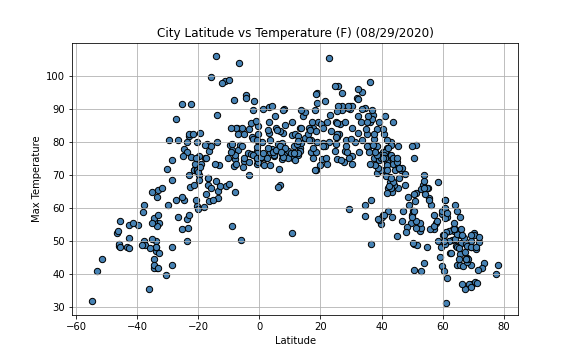
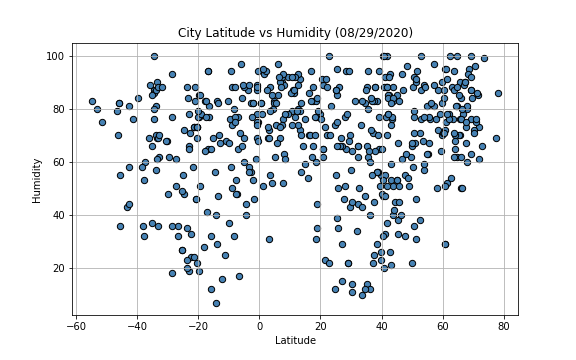
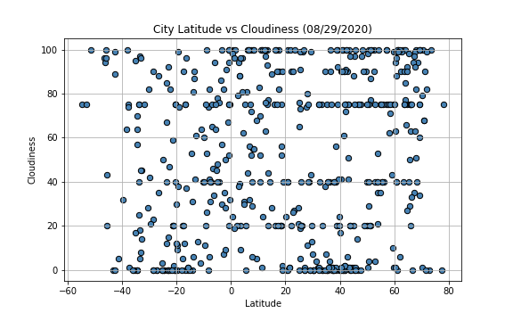

Max Temperature

One observable trend is the confirmation that the closer you get to the equator, the hotter it tends to get. The interesting thing is it appears the hottest temperatures are seen around the 20 degrees latitude line, this could be due to the way the earth's axis is titled. It would be interesting to see if -20 latitude showed similar trends when summertime rolls around for them.
Visualizations

